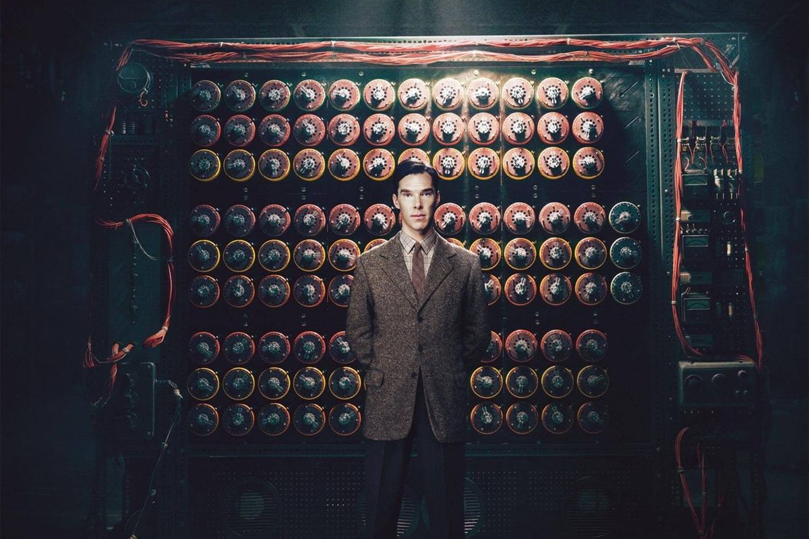
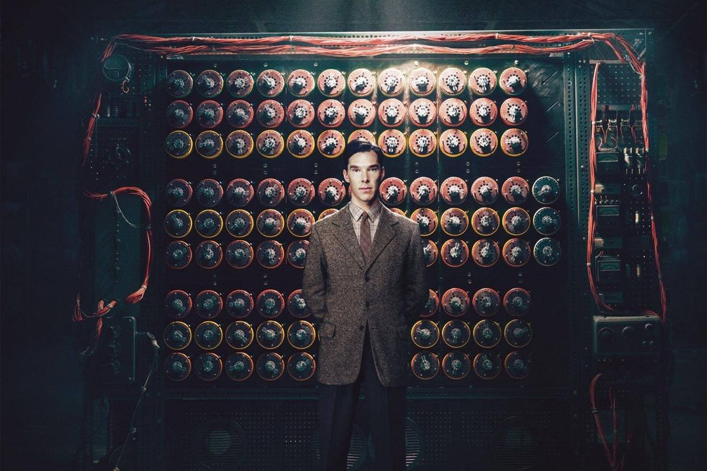

Artificial Intelligence started by Turing Machine
People often think of artificial intelligence as something akin to the being from the film "I, Robot"
depicted here, but experts are divided on what the future actually holds.
Credit: 20th Century Fox
 

It's a Saturday morning in June at the Royal Society in London. Computer scientists, public figures and reporters have gathered to witness or take part in a decades-old challenge. Some of the participants are flesh and blood; others are silicon and binary. Thirty human judges sit down at computer terminals, and begin chatting. The goal? To determine whether they're talking to a computer program or a real person.
The event, organized by the University of Reading, was a rendition of the so-called Turing test, developed 65 years ago by British mathematician and cryptographer Alan Turing as a way to assess whether a machine is capable of intelligent behavior indistinguishable from that of a human. The recently released film "The Imitation Game" about Turing's efforts to crack the German Enigma code during World War II, is a reference to the scientist's own name for his test.
In the London competition, one computerized conversation program, or chatbot, with the personality of a 13-year-old Ukrainian boy named Eugene Goostman, rose above and beyond the other contestants. It fooled 33 percent of the judges into thinking it was a human being. At the time, contest organizers and the media hailed the performance as an historic achievement, saying the chatbot was the first machine to "pass" the Turing test. [Infographic: History of Artificial Intelligence]